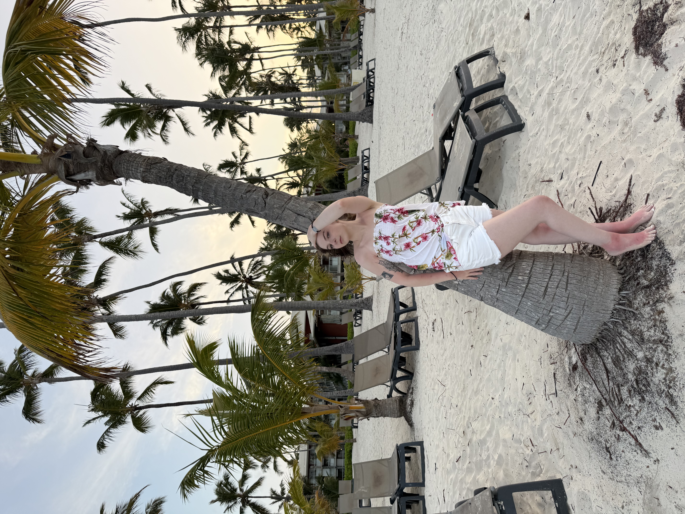

About Me
About Me

Hi! My name is Darien, I am twenty-two years old, my birthday is December 27th 2002 and I love all things creative! I am most passionate about video editing.Beyond video editing, I also have a love for photography, design, web design, and special effects makeup. I don’t have as much experience in photography and web design, but I love learning more about each and leveling up my skills. FYI, you can find my edits and some of my Carrd websites here :).
Currently I've been into playing games on my dsi, right now i'm playing Harvest Moon: A Tale of Two Towns. Besides that, I've been loving decorating things like phone cases, notebooks, letters for friends with all sorts of materials like 3D stickers,washi tape, and jewels.
“Rejection is merely a redirection” - Bryant McGill